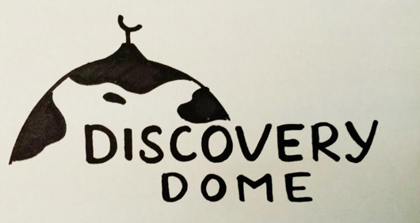
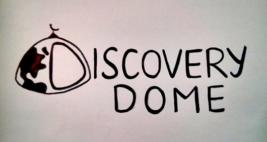

Logo design for a business focued on childrens' educational material, providing multicultural learning products such as books, toys, and stationary. Important concepts that needed to be communicated in the logo as per the clients' request:
- Exploration, connection, creation, reflection
- Environment as the third teacher
Concept Sketch


In the sketch I choose to model concepts of exploration, creation and reflection by using a dome with a patterned representation of continents to make it appear as a globe. Because the dome would be green and blue, I needed to think about how it would fit with the text in the logo. Would the colour fade into white behind the text?
The dome was edited so that once it does get coloured, the blue on the dome doesn't randomly fade into the text of the logo. As for the continents, I intended to have them drawn out to look like splashes of paint -- to incorporate the "play" concept. After all, this was a logo for a childrens' book company!
Result